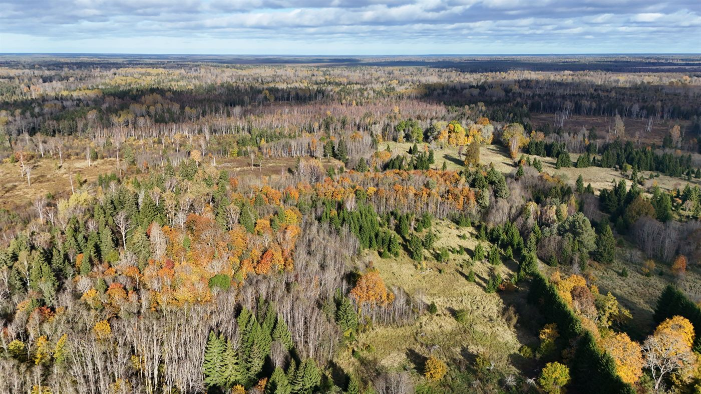
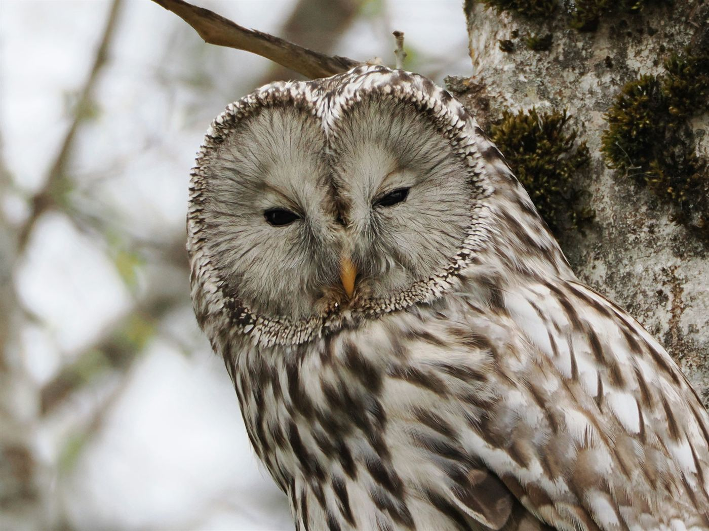

Valitud tööd · 2024–2026
Valgus, mis
jääb alles.
01 / minust
Pildistan asju, mis kaovad hetkega: hommikust udu, mööduvat valgust ja inimesi, kes ei tea, et neid vaadatakse.
Olen Eestis tegutsev fotograaf. Teen loodus- ja maastikufotosid ning vahel lihtsalt jalutan ringi, kui valgus on õige.
Minu jaoks ei ole hea pilt tehniliselt täiuslik. Hea pilt on see, mille juurde tahad hiljem tagasi tulla.
— Mari
02 / valitud tööd
2024 — 2026




„Kõige paremad pildid on need, mille jaoks sa ei jõudnud kaamerat välja võtta — ja siis mõtled neile terve elu.“
Märkmikust, märts 2026
03 / kontakt
Teeme midagi
koos.
Loodus, sündmused, maastikud või midagi, mida sa ise veel päris täpselt ei tea. Kirjuta ja mõtleme koos edasi.
mari@example.com